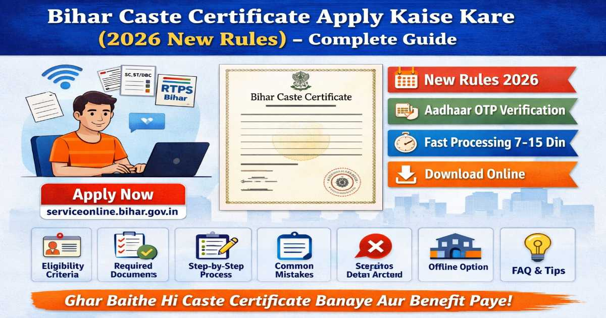

📝 Bihar Caste Certificate Apply Kaise Kare (2026 New Rules) – Complete Guide
Posted on: 15 April 2026

Aaj ke digital zamane me Bihar government ne kaafi saari services online kar di hain, jisme se ek important service hai Caste Certificate (Jati Praman Patra). Yeh document bahut zaroori hota hai education, government jobs, scholarship aur reservation benefits ke liye.
Pehle logon ko block ya office ke chakkar lagane padte the, lekin ab aap ghar baithe hi RTPS (Right to Public Service) Bihar Portal ke through apply kar sakte ho.
📚 Is Blog Me Kya Seekhenge?
- Caste certificate kya hota hai
- 2026 ke new rules kya hain
- Kaun apply kar sakta hai
- Kaunse documents lagenge
- Step-by-step online apply process
- Common mistakes aur tips
🧾 Caste Certificate Kya Hota Hai?
Caste Certificate ek government document hai jo aapki caste category ko verify karta hai jaise:
- SC (Scheduled Caste)
- ST (Scheduled Tribe)
- OBC (Other Backward Class)
- EBC (Extremely Backward Class)
Yeh certificate mainly reservation benefits lene ke liye use hota hai.
🎯 Caste Certificate Ka Importance
Agar aap Bihar ke resident ho, to yeh document aapke liye bahut important hai:
📚 Education me use
- College admission me reservation
- Scholarship apply karne me
💼 Job me use
- Government job me quota
- Competitive exams me relaxation
🏠 Government schemes
- Housing schemes
- Subsidy benefits
🆕 Bihar Caste Certificate New Rules 2026
2026 me Bihar government ne kuch important updates kiye hain:
✅ 1. Online Process Mandatory
Ab zyada tar applications online hi accept hote hain portal ke through.
✅ 2. Aadhaar OTP Verification
Application submit karte waqt Aadhaar-based OTP verification ho sakta hai for fast processing.
✅ 3. Faster Processing Time
RTPS system ke under time-bound service milti hai (fixed days ke andar certificate mil jata hai).
✅ 4. Multi-Level Application
Aap 3 level par apply kar sakte ho:
- Block (Anchal)
- Sub-Division (SDO)
- District (DM)
✅ 5. Digital Certificate Delivery
Certificate aapko milta hai:
- SMS link
- DigiLocker
- Portal inbox
👤 Eligibility Criteria (Kaun Apply Kar Sakta Hai)
Caste certificate ke liye apply karne ke liye kuch basic conditions hain:
- Applicant Bihar ka resident hona chahiye
- Applicant Indian citizen hona chahiye
- Minimum age approx 3 years
- Reserved category me belong karna chahiye
📄 Required Documents (Jaruri Documents)
Apply karne se pehle yeh documents ready rakhein:
🪪 Identity Proof
- Aadhaar Card
- Voter ID
📷 Basic Documents
- Passport size photo
- Mobile number
📜 Supporting Documents
- Self declaration (Form-II, III, V)
- Ration Card
- Caste proof of father/ancestor
🏡 Land/Revenue Documents
- Khatiyan
- Land records
- Panchayat verification (agar documents nahi ho)
🌐 Online Apply Ka Step-by-Step Process
Ab sabse important part – kaise apply kare online
🔹 Step 1: Website Open Kare
Sabse pehle official portal open kare:
👉 https://serviceonline.bihar.gov.in/
🔹 Step 2: Registration Kare
- “Khud ka registration” par click kare
- Mobile number ya email se account banaye
- OTP verify kare
🔹 Step 3: Login Kare
- User ID aur password se login kare
- Ya mobile OTP se login kare
🔹 Step 4: Service Select Kare
- “Apply for Service” par click kare
- Caste Certificate choose kare
🔹 Step 5: Form Fill Kare
Form me details bhare:
- Name
- Father/Mother name
- Address
- Category (SC/ST/OBC/EBC)
🔹 Step 6: Documents Upload Kare
- Required documents scan karke upload kare
- PDF format me upload kare
🔹 Step 7: Submit Kare
- Sab details check kare
- Submit button par click kare
🔹 Step 8: Acknowledgement Download Kare
- Receipt download kare
- Future reference ke liye safe rakhe
🔹 Step 9: Status Track Kare
- “Track Application Status” par jaakar check kare
🔹 Step 10: Certificate Download Kare
- Approval ke baad certificate download kare
- SMS ya email se bhi link milta hai
⏱️ Processing Time
- Normal: 7–15 din
- Tatkal: Fast processing
❌ Common Mistakes (Galtiyan Jo Nahi Karni)
- ❌ Wrong details fill karna
- ❌ Documents clear upload na karna
- ❌ Multiple applications submit karna
Portal clearly kehta hai: ek hi application kare aur wait kare.
💡 Important Tips
- ✔️ Always correct information fill kare
- ✔️ Mobile number active rakhe
- ✔️ Documents clear scan kare
- ✔️ Receipt safe rakhe
🏢 Offline Apply Option
Agar online nahi kar pa rahe ho to:
- Panchayat office
- Block office
- CSC center
Yahan se bhi apply kar sakte ho.
📲 RTPS Portal Ke Benefits
- Ghar baithe apply
- No long lines
- Fast processing
- Transparent system
🔐 Security & Transparency
- OTP verification
- Digital tracking
- Time-bound delivery
Yeh sab ensure karta hai ki process fair aur transparent rahe.
📊 Types of Caste Certificate
Bihar me 3 level par certificate issue hota hai:
- Block Level
- SDO Level
- District Level
📥 Certificate Download Kaise Kare
- Portal open kare
- Download certificate option select kare
- Application number dale
- Download kare
🤔 FAQ (Frequently Asked Questions)
❓ Q1: Kya caste certificate online apply kar sakte hain?
👉 Haan, official portal se easily apply kar sakte hain
❓ Q2: Kitne din me milta hai?
👉 7–15 din
❓ Q3: Kya Aadhaar jaruri hai?
👉 Haan, mostly verification ke liye
❓ Q4: Kya offline apply kar sakte hain?
👉 Haan, CSC ya block office se
🏁 Conclusion
Bihar me caste certificate banana ab bahut easy ho gaya hai thanks to RTPS Bihar Portal. Aap ghar baithe hi apply kar sakte ho, documents upload kar sakte ho aur certificate download bhi kar sakte ho.
New rules ke baad process aur bhi fast, transparent aur secure ho gaya hai. Bas aapko sahi information fill karni hai aur required documents upload karne hain.
👉 Agar aap student ho, job seeker ho ya government scheme ka benefit lena chahte ho, to caste certificate banana bahut zaroori hai.
✅ Final Tip:
Ek baar apply karne ke baad baar-baar application mat kare — patiently wait kare.